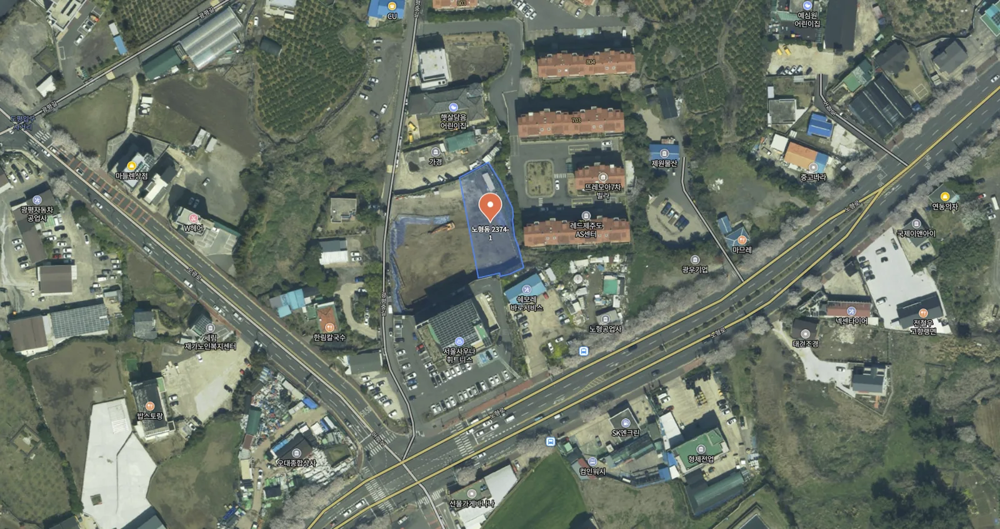
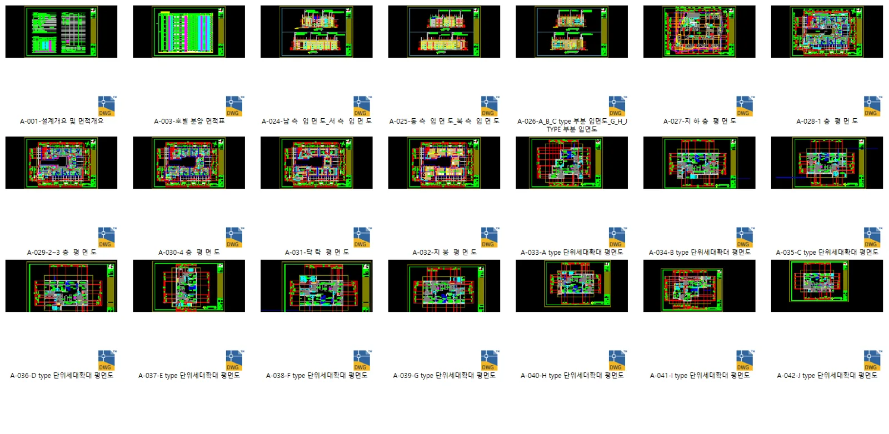

프로젝트 소개
제주시 중심부인 노형동은 주거 수요가 풍부하고 상권과 교통이 모두 우수한 지역입니다.
이번 공동주택 역시 실수요자와 투자자의 높은 관심을 받고 있는 신규 주거시설로,
세대별 평면 구성의 차이를 한눈에 보여주는 단위세대 아이소메트릭 제작이 의뢰되었습니다.
사업대상지: 제주특별자치도 제주시 노형동 2374-1 https://naver.me/FTMnBHEt

프로젝트 개요
본 프로젝트의 주된 목적은 다음과 같았습니다:
분양 광고 및 마케팅 자료 활용
고객 상담 시 세대별 구조 이해를 돕는 직관적 도면 제공
마감재 및 구조 변경 전 내부 설계안 공유
다양한 세대유형(A~J타입)이 존재하는 만큼,
단시간 내 다수의 세대 타입을 정확하게 구현하는 것이 핵심 과제였습니다.
이에 따라 저희는 빠르고 정확한 제작 프로세스를 기반으로 전 세대의 아이소메트릭을 안정적으로 납품할 수 있었습니다.
프로젝트 진행과정

아이소메트릭을 제작하기 위해 해당 건축물의 단위세대 평면 및 각종 도면을 제공 받았습니다.
해당 프로젝트는 빠르게 제작 후 납품되어 중간 수정사항 없이 첫 납품 결과물로 최종 결과물이 된 프로젝트 입니다.
PNG 확장자로 제작되어 편집 시 배경을 별도로 분리하지 않고 사용할 수 있도록 제작하여 보내드렸습니다.
해당 결과물은 A3사이즈 출력에 대응할 수 있는 사이즈로 제작하였으며, 필요시 원하시는 출력물 사이즈에 맞추어서 제작해드리고 있습니다.


결과물을 최초 착수 후 2~3일 내로 전부 제작해 보내드렸습니다.
최근 공동주택 분양 시장에서는 단위세대의 구조적 특징과 실사용 편의성을 효과적으로 전달하는 것이 중요해지고 있습니다.
특히 직관적인 이미지 콘텐츠는 고객의 이해도와 만족도를 크게 높일 수 있는 요소 중 하나입니다.
메이크그룹은 단위세대별 아이소메트릭 제작을 포함하여
3D 건축 모델링, 분양용 조감도, 인테리어 렌더링, VR투어 등
다양한 부동산 시각화 솔루션을 제공하고 있습니다.
언제든지 문의 주시면 친절하게 상담해드리겠습니다.
홈페이지
https://www.makegroup.co.kr/
블로그
https://blog.naver.com/makegroupcg